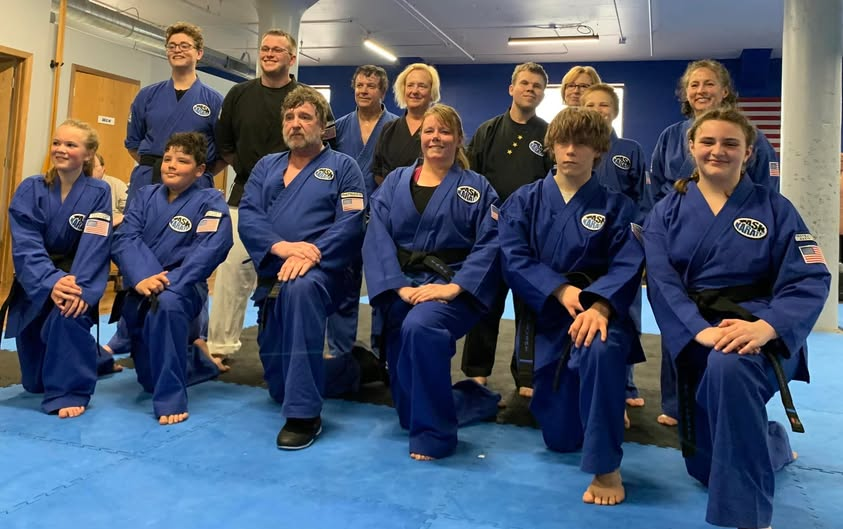
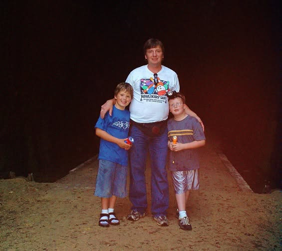
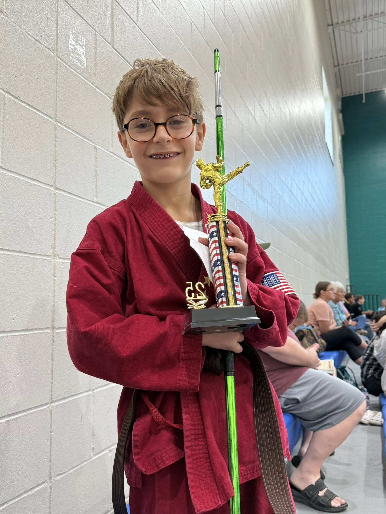

Kids Karate
Focus, respect, listening skills, and confidence through energetic, structured classes.
Martial arts training for kids, teens, and adults who want to build confidence, discipline, and practical skill—one class at a time.
New to Task Karate? See what fits you or call (608) 788-3126.
Task Karate blends traditional training with a friendly, focused school culture. You do not need to be “in shape” to begin—you just need a first class.
Focus, respect, listening skills, and confidence through energetic, structured classes.

Build skill and self-confidence with a clear progression from fundamentals to advanced work.

Filipino martial arts training that sharpens timing, distance, coordination, and control.

Focused weapons training for eligible students who are ready for the next layer of practice.
Not sure which class is right, what to wear, or how belts work? We can help you choose a comfortable place to begin.

Task Karate is serious about training and warm about people. Progress shows up in the small moments: trying again, helping a partner, and showing up.


